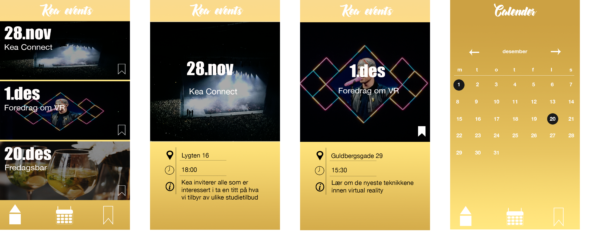

Det første projekt i forløbet ”Grundlæggende UX” var at designe en app, det ville forbedre studietiden for studerende på KEA.
Ud fra et spørgeskema, som vores medstuderende havde besvaret, kom vi frem til nogle af de mangler studerende på KEA oplever i hverdagen. Gennem vores medstuderendes overordnede tanker om undervisningen og faciliteterne på KEA, fik vi opdelt problematikkerne i mindre grupper med en overordnet overskrift.
Vi kom frem til at lave en app der ville give de studerende mulighed for at engagere sig i studiet og det sociale liv, og derved få mere ud af sin skolegang på KEA. Vi ønskede at lave en APP der ville skabe overblik over KEA’s mange skolerelaterede og sociale arrangementer og tilbud. Appen skulle samle information i en mere tilgængelig og overskuelig løsning end den lille klokke på fronter, som ingen rigtig tjekker. Vi valgte at kalde vores app KeaEvents, da appen samler alle arrangementer som KEA udbyder til de studerende.
Herunder ses et uddrag af appens design samt vores app ikon.
 Link til vores dokumentations website findes her Link til vores præsentations website findes her